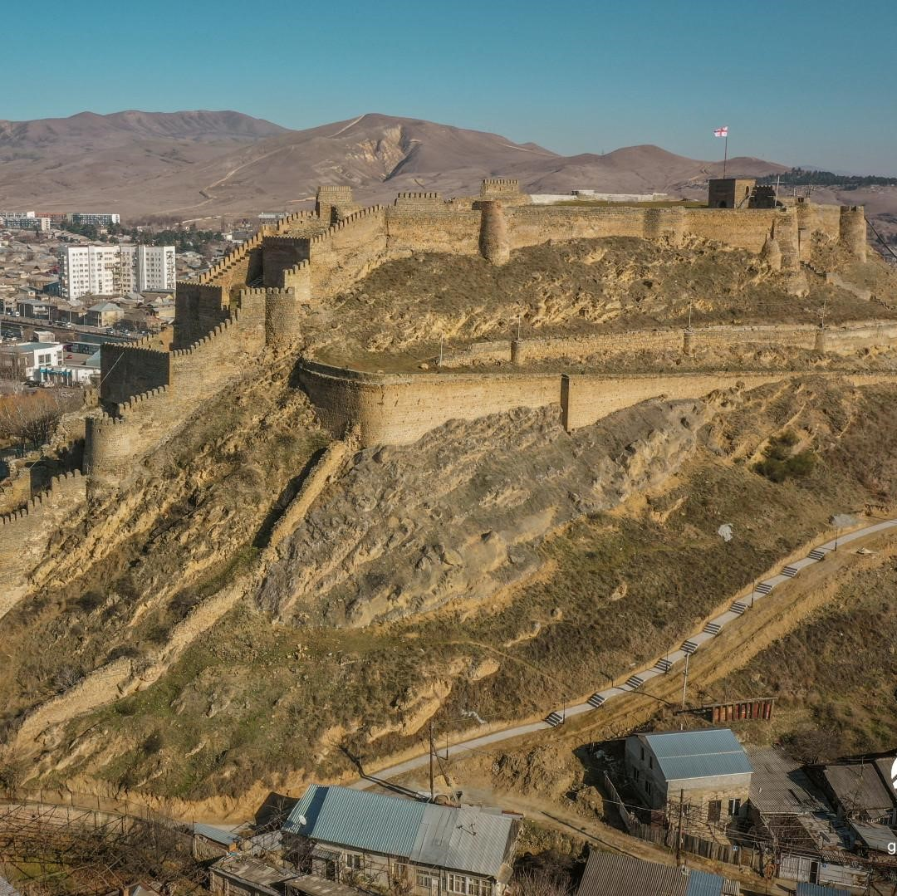
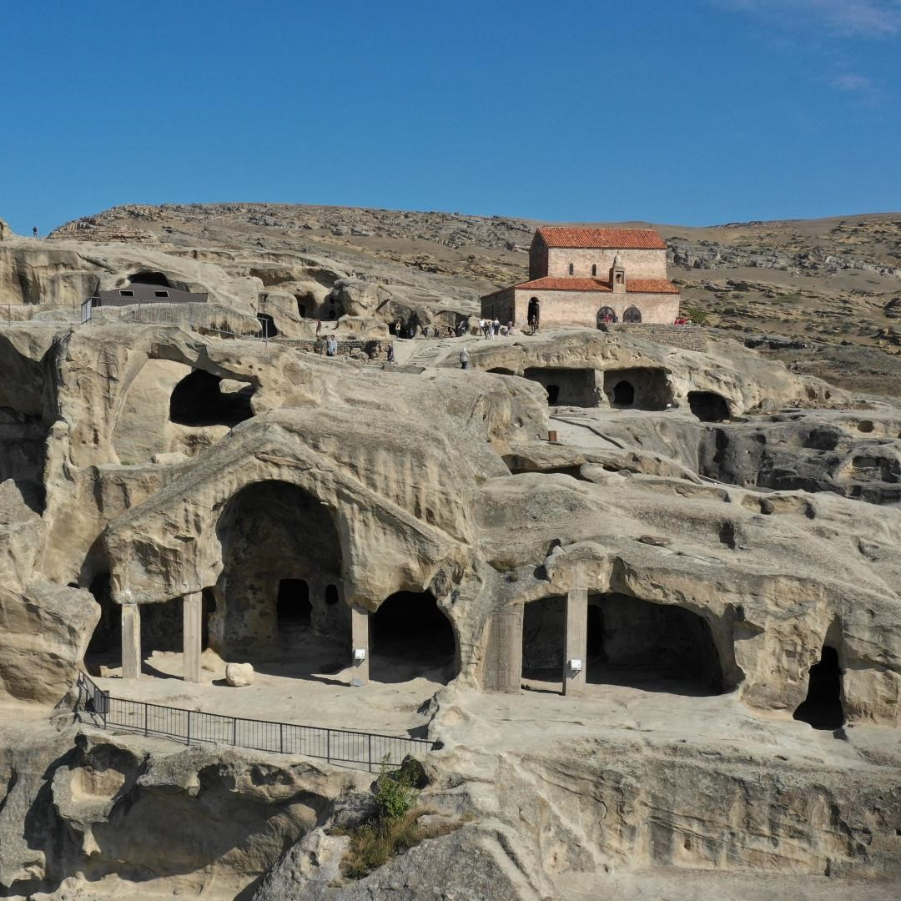
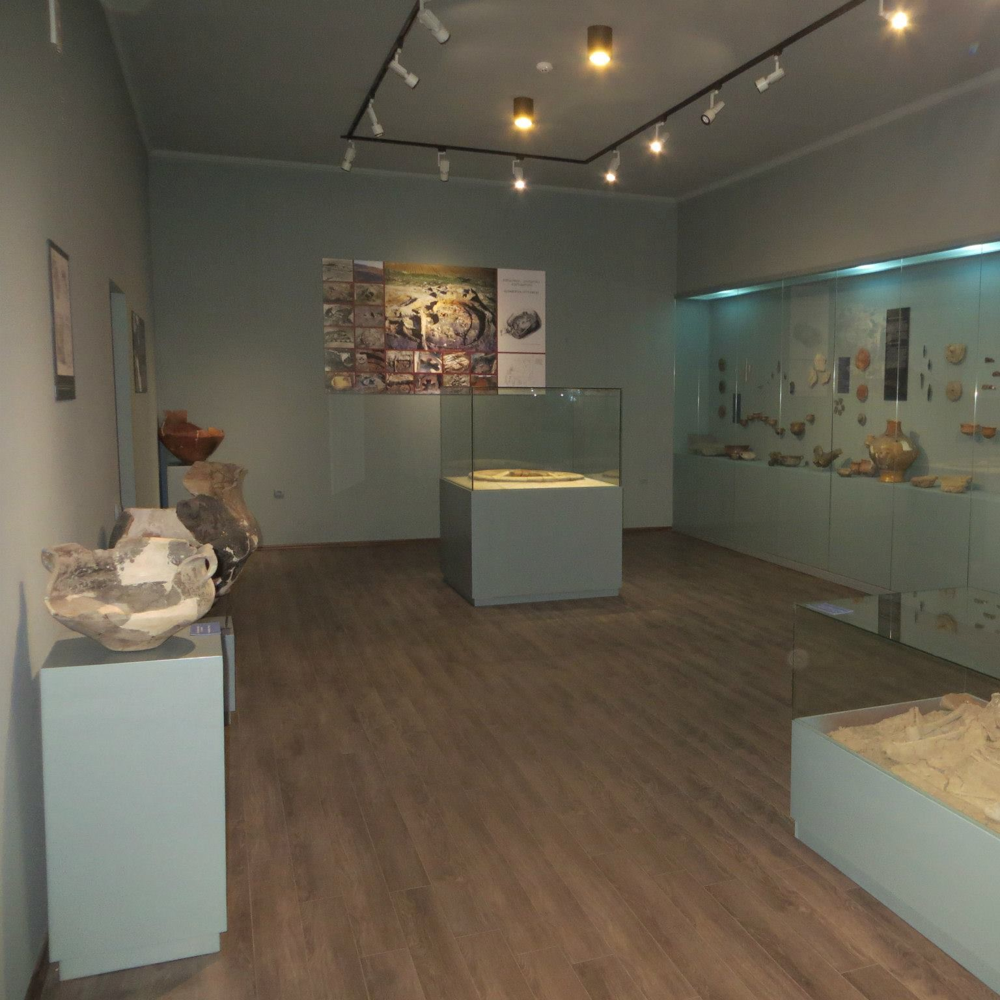

Top Three Sightseeing You Can See At Gori
!!!Hover mouse over a photo to zoom!!!
!!!click on it for Wikipedia!!!

Gori Fortress
is a medieval citadel in Georgia,
situated above the city
of Gori on a rocky hill.

Uplistsikhe
is an ancient rock-hewn town
in eastern Georgia,some 10 kilometers
east of the town of Gori, Shida Kartli.

Gori Historical
Ethnographical Museum
The museum houses archaeology collection
from local sites IV-III Millennium
B.C. numismatic
collection